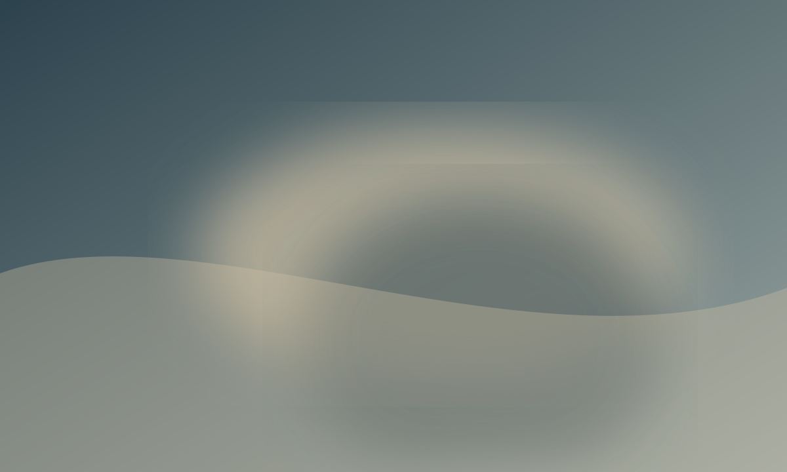
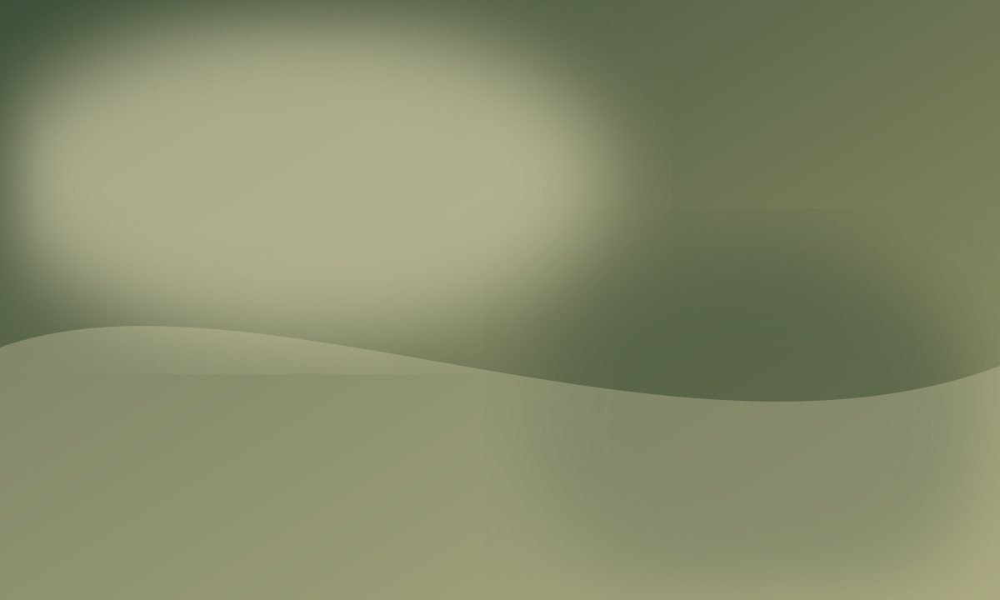

2025 · 16 min
Between Two Silences
A woman returns to a place that exists differently in memory, following traces left in wind, stone, and voice.
Moving-image works built from observation, fragments of testimony, and the rhythm of everyday gestures.

2025 · 16 min
A woman returns to a place that exists differently in memory, following traces left in wind, stone, and voice.

2024 · 11 min
A quiet study of time, distance, and the small rituals that hold a family together across borders.
2023 · 8 min
Unsent words surface through an imagined correspondence between two rooms and two generations.